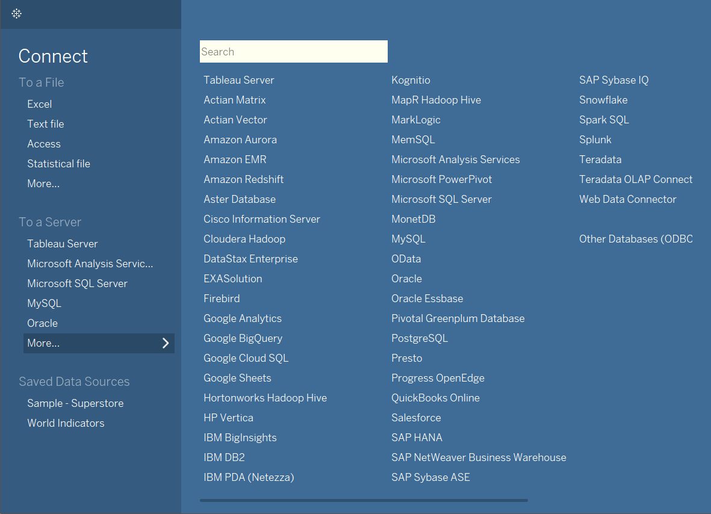
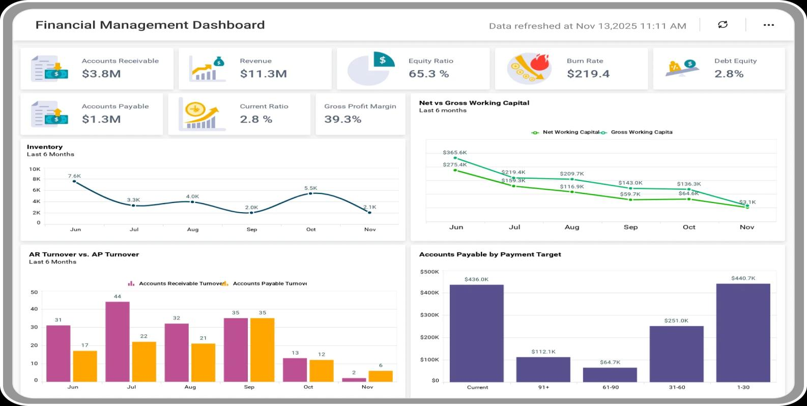
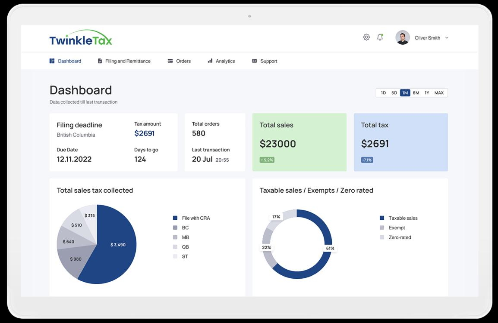

🏛️Pemerintah
Memantau serapan anggaran
- Yang lihat
- Pimpinan instansi, tiap Senin pagi.
- Isinya
- Persentase serapan per unit, sisa anggaran, tren per bulan.
- Gunanya
- Ketahuan unit mana yang seret sebelum keburu numpuk di Desember.
Orange nemuin polanya, Tableau bikin orang lain ngerti. Hasilnya bisa dipublish online, linknya tinggal tempel di CV. Di sinilah kalian ngerjain Project Kuliah 2.
Alurnya selalu sama, mau datanya kecil atau gede.
Satu tampilan aplikasinya, dua contoh dashboard jadi. Yang kalian bikin nanti kurang lebih seperti ini.



Urutannya jangan dibalik. Tanpa akun, karya kalian nggak bisa disimpan.
Pakai email yang aktif dan yang kalian inget, bukan email asal. Akun ini yang bakal nyimpen semua karya kalian sampai UAS.
🔗public.tableau.comwebNama profil ini nanti kelihatan di link karya kalian. Pakai nama asli, jangan nama alay, soalnya bakal ditempel di CV.
Di halaman yang sama ada tombol download. Pilih Windows atau macOS sesuai laptop kalian.
Next-next sampai selesai, terus login pakai email yang barusan didaftarin.
Download data latihan di bawah, terus di Tableau pilih Connect lalu Microsoft Excel. Kalau nama kolomnya muncul, berarti aman.
Tarik kolom Sales ke kotak Rows, tarik Region ke Columns. Grafik batang langsung muncul. Segampang itu.
Ini yang bikin Tableau beda dari Excel: hasilnya punya alamat sendiri di internet.
Data toko retail global, isinya ribuan transaksi penjualan dan retur. Ini yang dipakai di kelas.
Semua contoh ini bisa kalian tiru buat Project Kuliah 2.
Semua slide, modul, dan datanya. Yang bertanda Rencana masih bisa berubah.
56 mahasiswa dibagi 4 orang per kelompok.
Dikerjain berkelompok, dipresentasiin pas UAS ke simulasi jajaran direksi. Bobotnya 35 persen.

| Yang dinilai | Porsi | Nilai bagus itu kayak gimana |
|---|---|---|
| Pilihan angkanya | 20% | Yang ditampilin memang yang dipakai buat ambil keputusan. |
| Grafiknya tepat | 20% | Bentuk grafiknya cocok sama pertanyaannya, nggak asal keren. |
| Enak dipakai | 20% | Filternya jelas, nggak bikin bingung, nggak berantakan. |
| Ceritanya nyambung | 20% | Ada alur dari masalah, temuan, sampai saran. |
| Presentasinya | 20% | Yakin, ngerti isi dashboardnya, bisa jawab pertanyaan dadakan. |